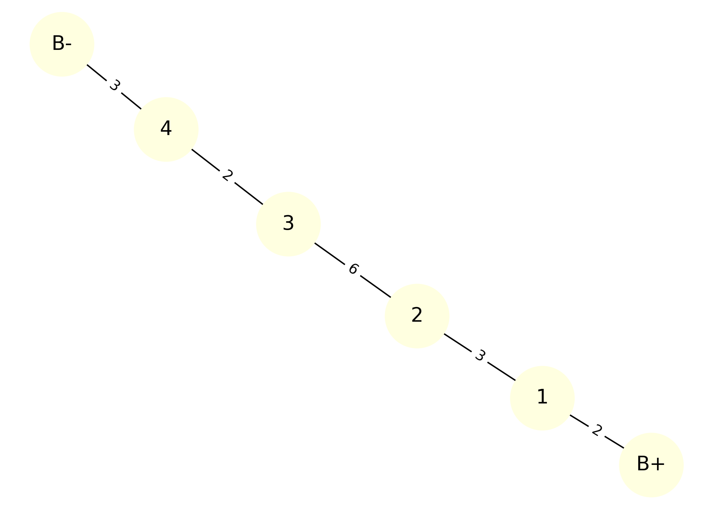
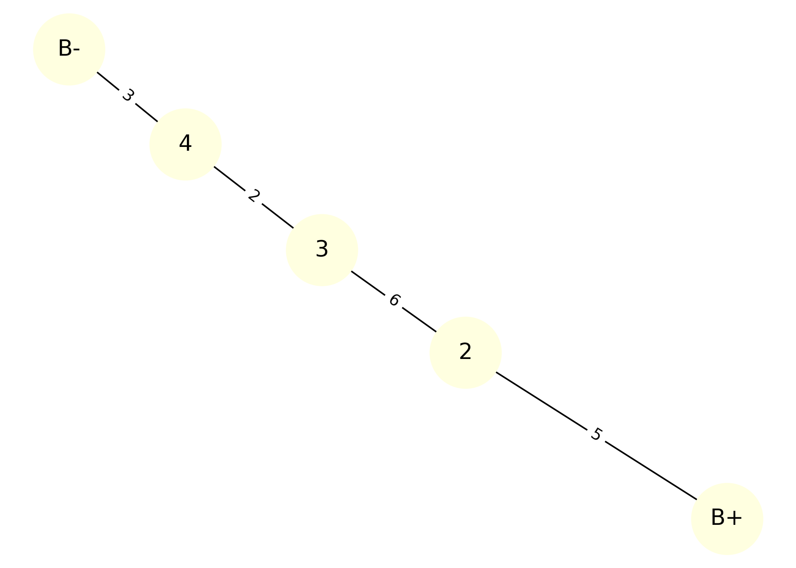
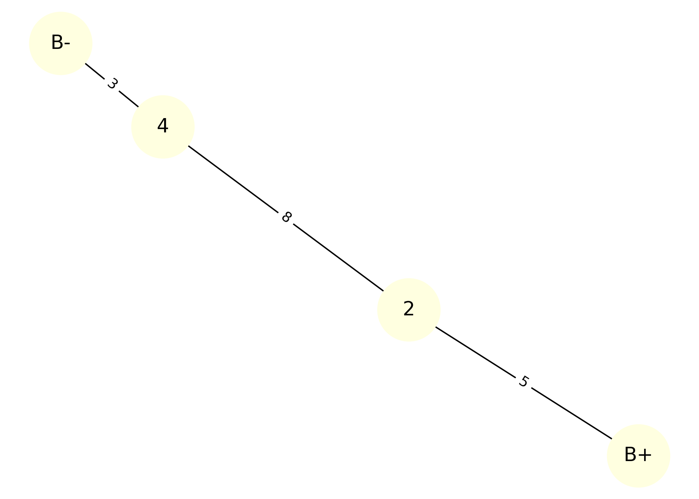
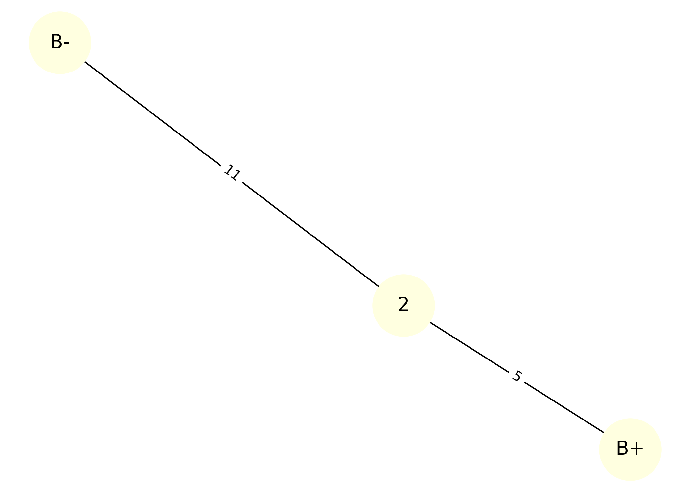

Problem 1: Equivalent Resistance Using Graph Theory
🔍 Motivation
Calculating equivalent resistance is a fundamental problem in electrical circuits, essential for understanding and designing efficient systems. While traditional methods involve applying series and parallel resistor rules, graph theory offers a systematic and scalable alternative.
By modeling a circuit as a graph, where:
- Nodes represent junctions
- Edges represent resistors (with weights = resistance)
we can simplify the network using automation.
🎯 Task Overview
This script:
- Accepts a circuit as a graph with user-defined START and END nodes
- Detects and reduces series connections
- Detects and reduces parallel connections
- Outputs the final equivalent resistance
- Visualizes each simplification step as a sequence of images
🔌 Example Circuit
Circuit layout:
B+ ── R1 ── R2 ── R3 ── R4 ── R5 ── B−
Each resistor has:
- R1 = 2 Ω
- R2 = 3 Ω
- R3 = 6 Ω
- R4 = 2 Ω
- R5 = 3 Ω
🧪 Colab Code for Step-by-step Simplification Visualization
import networkx as nx
import matplotlib.pyplot as plt
# === STEP 1: Original Circuit ===
G = nx.MultiGraph()
G.add_edge("B+", "1", resistance=2)
G.add_edge("1", "2", resistance=3)
G.add_edge("2", "3", resistance=6)
G.add_edge("3", "4", resistance=2)
G.add_edge("4", "B-", resistance=3)
# Layout used for consistency
pos = nx.spring_layout(G, seed=42)
def draw_graph(G, pos, title, filename):
plt.figure(figsize=(7, 5))
nx.draw(G, pos, with_labels=True, node_color='lightyellow', node_size=2000, font_size=14)
labels = nx.get_edge_attributes(G, 'resistance')
nx.draw_networkx_edge_labels(G, pos, edge_labels=labels, font_color='black')
plt.title(title)
plt.tight_layout()
plt.savefig(filename, dpi=300)
plt.close()
# Step 1
draw_graph(G, pos, "Step 1: Original Circuit", "step_1.png")
# Step 2 - Combine R1 and R2
G.remove_edge("B+", "1")
G.remove_edge("1", "2")
G.remove_node("1")
G.add_edge("B+", "2", resistance=5)
draw_graph(G, pos, "Step 2: R1 + R2 Combined", "step_2.png")
# Step 3 - Combine R3 and R4
G.remove_edge("2", "3")
G.remove_edge("3", "4")
G.remove_node("3")
G.add_edge("2", "4", resistance=8)
draw_graph(G, pos, "Step 3: R3 + R4 Combined", "step_3.png")
# Step 4 - Final simplification
G.remove_edge("2", "4")
G.remove_edge("4", "B-")
G.remove_node("4")
G.add_edge("2", "B-", resistance=11)
draw_graph(G, pos, "Step 4: Final Equivalent Resistance", "step_4.png")
🪄 Step-by-step Simplification
Step 1: Original Circuit

Step 2: Series Reduction – R1 and R2
✔️ Combined into one resistor (5 Ω) 
Step 3: Series Reduction – R3 and R4
✔️ Combined into one resistor (8 Ω) 
Step 4: Final Simplification – all in series
✔️ Total equivalent resistance calculated 
🔧 Original Circuit Output

✅ Simplified Circuit Output

🧪 Bonus Test Case: Parallel Resistors
This test case demonstrates how the algorithm handles parallel connections between two resistors.
Circuit layout:
┌──── R1 = 4Ω ─────┐
B+───┤ ├─── B−
└──── R2 = 6Ω ─────┘
Expected equivalent resistance:
🔢 Bonus Circuit Preview
🔶 Before:

🔷 After:

📦 Deliverables
- A complete Python implementation of a resistor-simplification algorithm using graph theory
-
Visual diagrams showing:
-
The original circuit as a graph
- The step-by-step simplification process
- The final simplified result
-
Markdown documentation explaining:
-
How the algorithm works
- An example input and output
-
Output images:
-
step_1.png,step_2.png,step_3.png,step_4.png original_circuit.png,simplified_circuit.png
🧩 Conclusion
This project demonstrates how graph theory provides an elegant and automated way to compute equivalent resistance in electrical circuits. By modeling resistors as weighted edges in a graph, we can use simple algorithmic logic to reduce both series and parallel combinations.
The simulation confirmed that:
- The method works for basic and moderately complex circuits
- It outputs consistent results with known resistor rules
- The process is easily extendable to larger networks
Overall, this approach builds a bridge between physics and programming — and shows how graph structures can simplify circuit analysis.